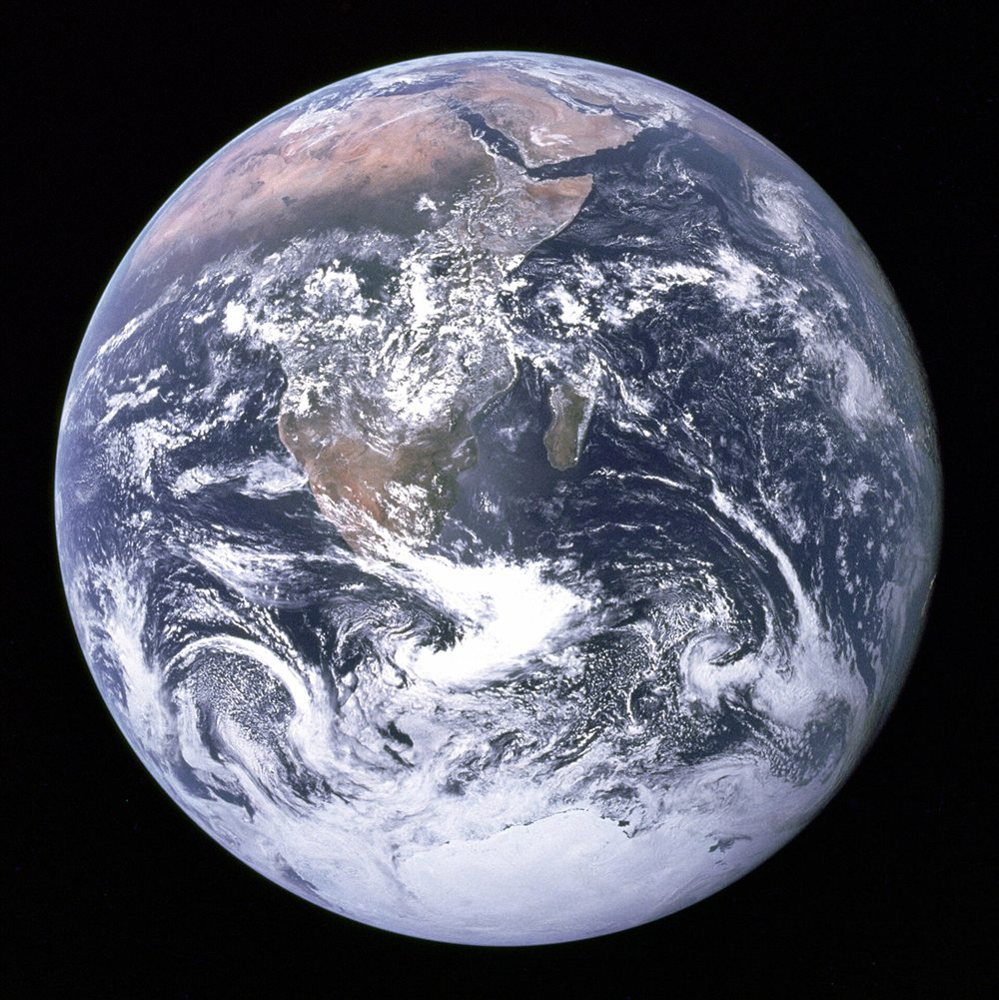

Viento, presión y rotación terrestre
El viento que te despeina en la calle es la última escala de una máquina enorme. El Sol calienta más el ecuador que los polos, el aire intenta repartir ese calor y la rotación de la Tierra desvía todo lo que se mueve. Con esos tres ingredientes se entiende el mapa general de los vientos, y por qué el tiempo cambia como cambia.

La atmósfera se organiza en grandes circulaciones. La NOAA, el organismo estadounidense del océano y la atmósfera, describe tres en cada hemisferio [1]. En la celda de Hadley, el aire se mueve en superficie hacia el ecuador, se calienta y asciende, y en altura vuelve hacia los polos [1]. En la celda de Ferrel, en latitudes medias, el aire de superficie va hacia el polo y hacia el este, y el de altura en sentido contrario [1]. En la celda polar, la más chica y débil, el aire se hunde sobre el polo y sale hacia afuera en superficie [1].
Entre las celdas quedan bandas de presión: alta presión alrededor de los 30° y en los polos, baja presión en el ecuador y entre los 50° y 60° [1]. Eso explica buena parte del clima: en general, la alta presión va con tiempo bueno y seco, y la baja presión con lluvia y tormentas [1].
Una olla enorme y girando: calentá una olla por el centro y el agua sube ahí y baja por los costados. Si además la olla gira y es muy ancha, una sola celda ya no alcanza para llevar el calor de un lado a otro, y el flujo se parte en pedazos y remolinos.
Sobre una Tierra que gira, un objeto en movimiento parece desviarse: es la fuerza de Coriolis, que en el hemisferio norte apunta 90° a la derecha de la velocidad [2], y en el sur, a la izquierda. Depende de la latitud a través del parámetro de Coriolis, y se anula en el ecuador [3]:
Por encima de la capa cercana al suelo, la fricción y las aceleraciones son en general despreciables, y la fuerza dominante se equilibra: la diferencia de presión empuja y Coriolis desvía [2]. El resultado es el viento geostrófico: el aire no va de la alta a la baja presión, sino en ángulo recto a esa dirección [2]. En altura, además, corren las corrientes en chorro y las ondas de Rossby, que organizan las tormentas de las latitudes medias.
Cerca del suelo, la fricción frena el viento y lo desvía hacia la baja presión [4]. Por eso, el aire entra girando en espiral hacia una baja, y tiene que subir (un razonamiento propio). Al subir, se enfría y sus nubes pueden dar lluvia. En un anticiclón pasa lo contrario: el aire baja, y al bajar se calienta [5], con lo cual las nubes tienden a desaparecer.
Ese aire que baja y se calienta tiene otras consecuencias. Puede dejar aire más caliente arriba que abajo, una inversión térmica que atrapó el humo de Londres en 1952 [5]. En cambio, si el aire de abajo es mucho más caliente que el de arriba, la estabilidad atmosférica se rompe y crecen las tormentas, con granizo y, a veces, tornados. Sobre un mar tropical cálido, ese ascenso puede organizarse en un huracán.
Una historia de ideas: George Hadley propuso en 1735 una sola circulación para cada hemisferio, y William Ferrel, en 1856, una celda de latitudes medias que da cuenta de los vientos del oeste entre los 35° y los 60° [1]. Según la NOAA, esos vientos se deben a la fricción, no a la diferencia de calor entre el ecuador y los polos [1]. Los remolinos de las latitudes medias también participan: transfieren cantidad de movimiento hacia los polos e impulsan esa celda [4].
La atmósfera es un fluido calentado de manera desigual sobre una esfera que gira. El calentamiento pone el aire en movimiento, las celdas lo reparten y la rotación lo desvía hasta que corre casi paralelo a las líneas de igual presión. Los fenómenos de esta sección, desde la brisa de la costa hasta los huracanes, son variantes de esa misma física.
Pregunta para la comunidad: El agua de tu bañera no gira por Coriolis al vaciarse, como se cuenta en este mito. ¿A partir de qué tamaño y qué duración creés que un movimiento empieza a notar la rotación de la Tierra?